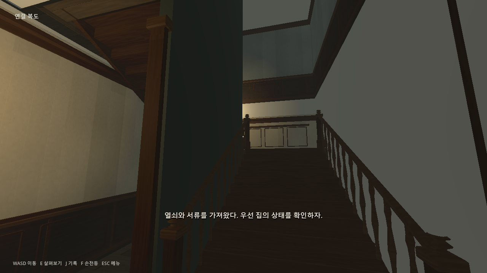
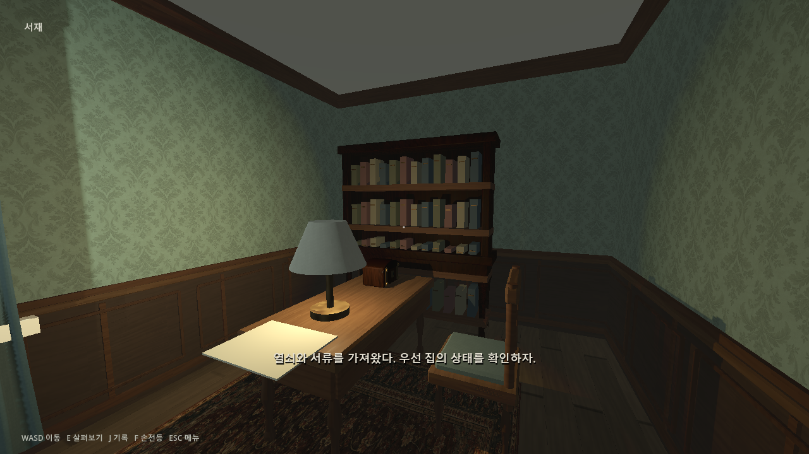
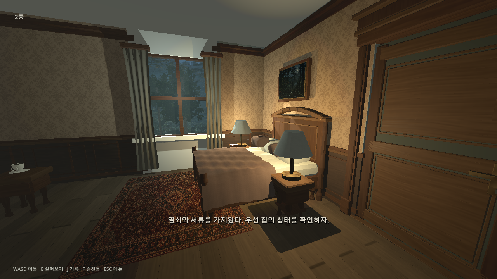
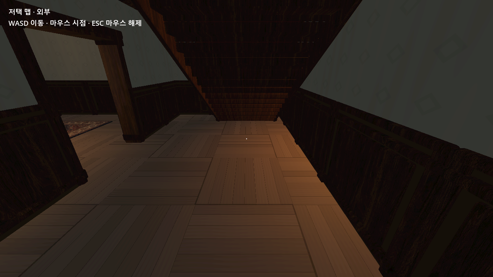
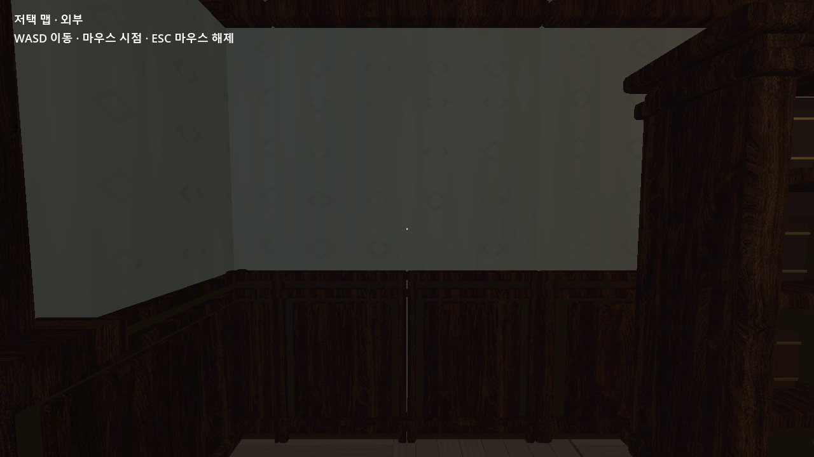
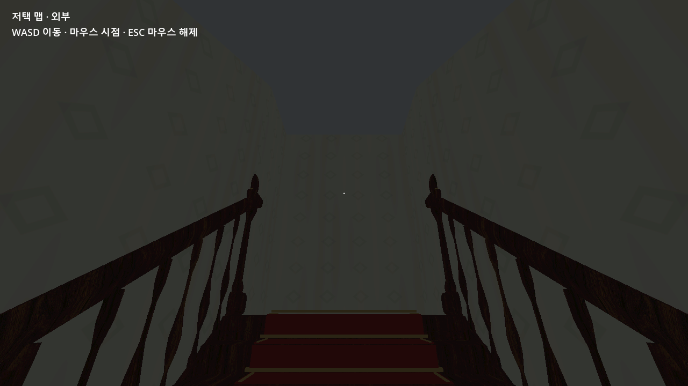
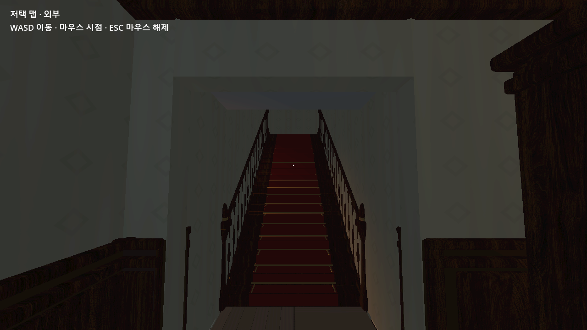

실제로 거주했던 대저택
유럽식 석조 대저택을 기본으로 대리석, 원목, 황동·청동을 사용한다. 이집트 요소는 신전처럼 과장하지 않고 유물과 문양을 절제해서 섞는다.
단순한 공포 공간이 아니라 실제 사람이 살았던 고급 저택이라는 현실성을 먼저 만들고, 그 위에 이집트 신화와 이공간 연출을 단계적으로 쌓는다.
유럽식 석조 대저택을 기본으로 대리석, 원목, 황동·청동을 사용한다. 이집트 요소는 신전처럼 과장하지 않고 유물과 문양을 절제해서 섞는다.
현실의 저택은 비교적 온전하게 유지하고, 신화적 존재의 영향과 비현실적인 공포는 별도의 이공간과 퍼즐에서 강하게 드러낸다.
폐허가 아니라 관리가 멈춘 고급 저택. 먼지, 빛바랜 천, 덮인 가구와 마른 식물처럼 시간이 멈춘 집의 인상을 목표로 한다.
현재는 방 배치, 계단, 층간 연결과 외피를 우선 완성한다. PBR, 폭풍우, 야간 조명과 손전등 연출은 전체 구조 확정 이후 진행한다.
층계와 공간을 먼저 설계하고, 동선·디자인·에셋·Godot 구현을 거쳐 실제 실행 검수로 이어진다.
B1·1F·2F·3F의 층 구성과 각 공간의 역할을 정하고, 중앙홀·방·계단이 들어갈 기본 평면을 잡는다.
현관에서 중앙홀, 계단, 복도로 이어지는 이동 폭과 층간 연결을 실제 플레이어 기준으로 조정한다.
방의 용도에 맞는 가구, 벽 마감, 조명과 생활 흔적을 정해 저택 전체가 하나의 디자인 언어를 갖도록 구성한다.
계단, 벽 패널, 몰딩, 가구와 재사용 가능한 3D 에셋을 공간 크기에 맞춰 배치하고 시각 메시와 충돌체를 분리한다.
설계된 구조를 Godot 씬과 GDScript에 연결하고, 바닥·벽·문·계단의 실제 충돌과 게임플레이 연결을 구현한다.
실제 플레이어 이동, 방 출입, 계단 왕복, 외피 누락과 GPU 실행 화면을 확인해 설계가 게임 안에서 제대로 작동하는지 검증한다.
설명만으로 공간을 판단하지 않도록 실제 Godot 실행 화면을 함께 기록했다. 현관과 계단은 이동 동선, 서재와 침실은 생활감과 방의 기능을 확인하는 기준으로 사용했다.




캡처는 장식 완성도를 과장하기 위한 이미지가 아니라, 방 배치·문 위치·계단 연결·실제 이동 가능 여부를 확인한 실행 기록이다.
각 층은 이야기에서 맡는 역할과 플레이 경험이 서로 다르게 설계된다.
넓은 중앙홀과 메인 계단을 중심으로 대저택의 첫인상을 담당한다. 현재 전체 구조와 주요 이동 동선은 확정 상태다.
생활·개인 공간을 중심으로 구성한다. 주인의 침실과 전신 초상화를 통해 앞서 발견한 기록의 주인이 누구인지 연결된다.
일반 생활층이 아니라 고고학자의 연구와 집착이 본격적으로 드러나는 영역. 기존 3층의 외벽 문제도 재설계 과정에서 함께 해결한다.
일반적인 지하실이 아니라 대부분 비어 있는 최종 이공간. 넓은 공백 자체를 연출로 사용하며 조건에 따라 엔딩이 갈린다.
구조 안정성을 먼저 확인한 뒤, 최근에는 1층 지하계단 제거와 2층 숨겨진 진입 구조를 실제 실행 화면으로 확인했다.




플레이어가 공간을 탐색할수록 주인의 정체와 저택의 비밀이 구조 자체를 통해 드러난다.
플레이어는 처음부터 주인을 알지 못한다. 1·2층에서 기록을 발견하고 주인의 침실과 초상화를 통해 정체를 파악한 뒤, 숨겨진 구조와 이공간이 열리면서 현실의 규칙이 무너지기 시작한다.
지하 이공간에서 조건을 충족하면 없던 계단이 생성된다. 계단은 1층 내부가 아니라 저택 외부 지상으로 직접 이어진다.
탈출 계단이 생성되지 않고 되돌아갈 길도 사라진다. 플레이어 역시 고고학자와 같은 방식으로 이공간에서 실종된다.
확정된 1·2층 구조를 유지하면서, 이번에 마련한 비밀 진입부를 후속 스토리와 연결한다.
2층 벽문은 스토리 조건을 만족했을 때 열리고, 계단 상단의 전환 지점에서 이공간 콘텐츠로 이어진다. 현실 3층과 지하 엔딩 공간은 이 전환 구조를 기준으로 후속 설계한다.